한 판의 흐름
고르고 → 열고 → 마음 얻고 → 엔딩 뽑기. 옆으로 넘겨 보세요.
01로비첫 캐릭터는 무료. GO!
02땅따먹기80% 열면 사진 1장
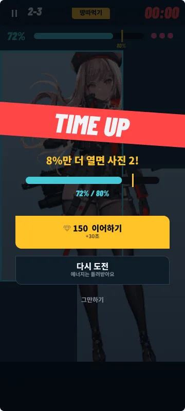
03시간 초과"8%만 더" — 여기서 결제
04사진 획득앨범 1/5 · 대화 열림
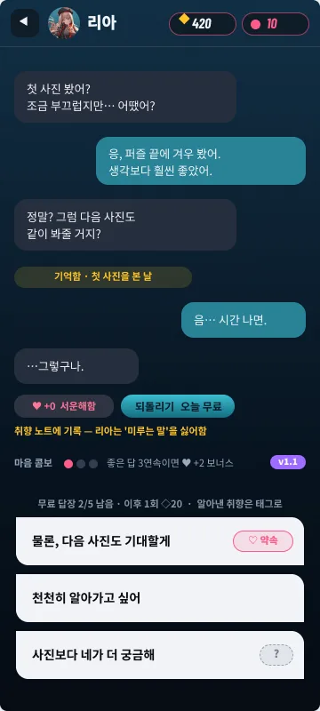
05대화무료 답장 5회 · 이후 ◇20
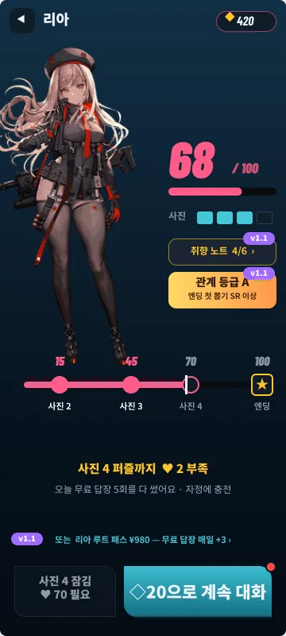
06관계♥ 모자라면 다음 사진 잠김
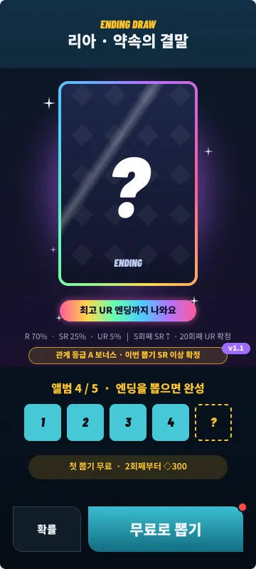
07엔딩 뽑기첫 1회 무료 · 최고 UR
08결과UR = 전면 홀로 (움직임 v1.2)
마음을 못 얻으면, 다음 사진도 없다
사진 퍼즐 입장권 = 친밀도. 말실수는 되돌린다.
- 답장 하루 무료 5회 · 이후 1회 ◇20
- ♥는 고른 뒤 공개 — 단, 알아낸 취향은 태그로 보인다
- 사진 2 ♥15 · 사진 3 ♥45 · 사진 4 ♥70 · 엔딩 ♥100
- ♥ 2 모자랄 때 → 자정까지 기다리거나 ◇20으로 계속 대화
엔딩은 뽑는다
첫 판은 공짜. 더 높은 등급이 보이니까 한 번 더.
R70% · 기본 일러
SR25% · 수위↑ · 홀로 테두리
UR5% · 최고 수위 · 전면 홀로
(움직임 v1.2)
- 뽑기 화면에 “최고 UR까지” 뱃지 + 확률 한 줄 상시 노출
- 다시 뽑기 = 확인 시트 1장: 내 보유 등급 · 다음 확정까지 남은 횟수 · ◇300
- 확률 + 스텝업: 5회째 SR 이상 · 20회째 UR 확정 (무료 1회 포함)
- 어떤 등급이든 첫 1장으로 앨범 5/5 — 무과금도 엔딩 본다
- 중복 등급 → ◇60 · 등급 모으기 보상 없음
불만 포인트는 게임으로 푼다
돈 내는 이유를 '운이 나빠서'가 아니라 '더 빨리, 더 높이'로 바꾼다.
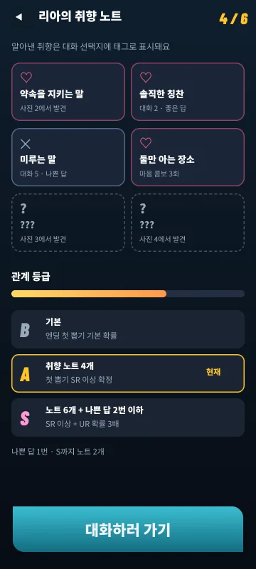
답을 운으로 찍는다
취향 태그
알아낸 취향이 선택지에 태그로 뜬다. 맞히는 건 실력. 노트 화면 v1.2
틀리면 그냥 손해
실패도 수집
나쁜 답 = 싫어하는 취향 공개. 되돌리기 하루 1회 무료. 콤보 v1.2
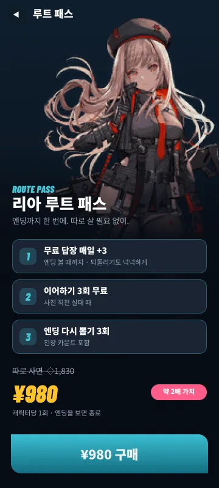
돈을 세 번 묻는다
루트 패스 ¥980v1.1
무료 답장 매일 +3 · 이어하기 3 · 다시 뽑기 3을 한 번에. 구매 제안은 세션당 1회.
최고 엔딩이 순전히 운
관계 등급 보너스v1.2
A = 첫 뽑기 SR 이상 확정 · S = UR 확률 3배. 잘한 만큼 높게.
퍼즐에서 막혀 이탈
도움 모드
2연속 실패 → 다음 판 시작 영역 +10%. 무료.
무과금은 목표가 없다
일일 미션 ◇40v1.1
퍼즐 1 · 대화 1 · 앨범 보기. 캐릭터 한 명 끝낼 때쯤 다시 뽑기 1회분.
목록만 봐도 다음 할 일이 보인다
잠긴 캐릭터는 흐리게(런칭: 블러 + 코드 줌/팬). 캐릭터가 6명을 넘으면 목록·필터를 연다.
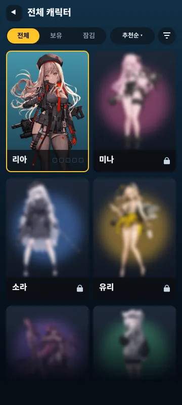
전체 보기v1.1카드마다 엔딩 진행도 · 최고 등급
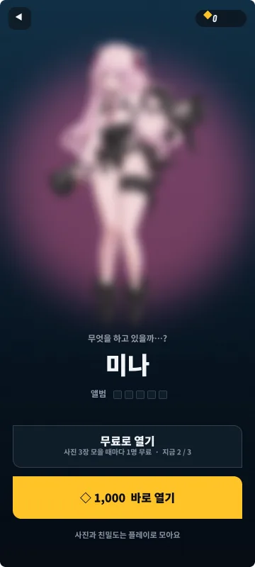
잠긴 캐릭터런칭사진 3장마다 1명 무료 or ◇1,000
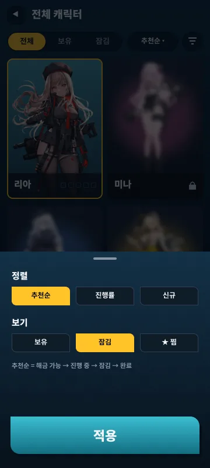
정렬 · 필터v1.1추천순 · 진행률 · 신규
숫자로 보면
출시 기준. 무과금으로도 기본 엔딩까지 도달.
4명런칭 캐릭터 · 월 +2 (6개월차 12명)
5장캐릭터당 앨범 (사진 4 + 엔딩)
3등급엔딩 R · SR · UR
◇ 하나해금권 · 대화권 없음
~8일무과금 1명 완결
재화는 ◇ 하나, 쓰는 곳은 다섯 군데
기다리기 싫을 때, 거의 다 열었을 때, 말실수했을 때, 더 높은 엔딩이 보일 때.
캐릭터 바로 열기
◇ 1,000
접근만 앞당긴다. 사진·친밀도는 0부터.
이어하기 · 부스터
◇ 100~150
사진 직전 실패에서 +30초. 스타터 팩 ¥980.
추가 답장
◇ 20 / 회
무료 5회를 다 썼는데 ♥가 모자랄 때.
엔딩 다시 뽑기
◇ 300
R 70 · SR 25 · UR 5%. 5회째 SR↑ · 20회째 UR 확정.
캐릭터 루트 패스v1.1
¥ 980
위 세 가지를 한 번에. 캐릭터당 1회.
화면에 보이는 재화는 ◇ 하나(내부는 유상/무상 분리). 사진 · 친밀도는 팔지 않는다. 기본 엔딩은 무료 1회로 보장한다. 구매 제안은 세션당 한 번.
① LAUNCH · MVP
런칭 필수 — 이것만 있으면 출시한다
한 판 흐름 8화면 + 해금 · 다시 뽑기 · 상점 · 앨범. 화면 속 보라색 v1.x 핀은 런칭 빌드에서 숨긴다.
L-2 해금사진 3장당 1명 무료 · ◇1,000
E-1 다시 뽑기확률 + 5회 SR↑ · 20회 UR
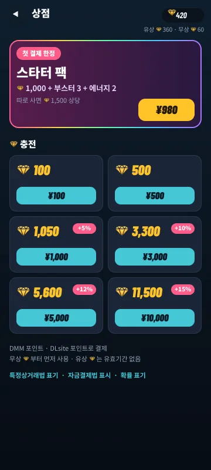
S-1 상점◇ 6팩 + 스타터 팩 ¥980
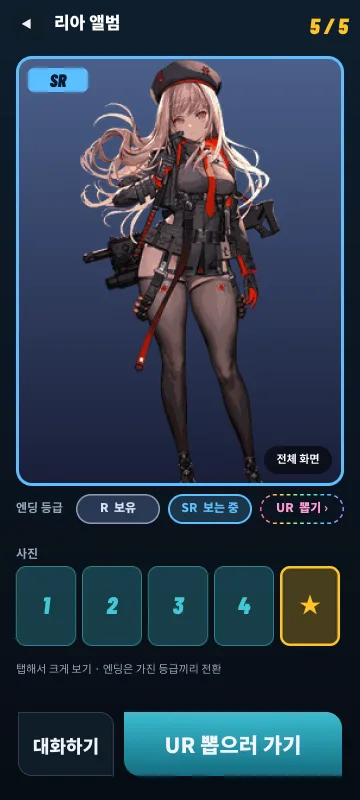
A-1 앨범사진 4 + 엔딩 등급 전환
콘텐츠캐릭터 4명 (첫 1명 무료)
캐릭터당 스탠딩 1 · 사진 4 · 엔딩 1구도 (R/SR/UR 차분)
퍼즐 10판 · 스토리 대화 8회 (선택지 고정 시나리오, LLM 없음)
시스템땅따먹기 퍼즐 · 이어하기/부스터 · 2연속 실패 도움 모드
♥ 게이트 · 취향 태그 · 나쁜 답 기록 · 되돌리기 하루 1회 무료
엔딩 뽑기: 첫 1회 무료 · 확률 + 스텝업
경제재화 ◇ 하나 (내부 유상/무상 분리)
무료 답장 5/일 → 이후 ◇20 · 진행 해금 (사진 3장당 1명)
상점 6팩 + 스타터 팩 · 플랫폼 포인트 결제
연출 · 운영UR = 정지 일러 + 홀로 셰이더 (기울이면 빛 이동)
플랫폼 로그인 · 결제 SDK · 서버 세이브
확률 표기 · 특상법 · 자금결제법 표기 · 컴프가챠 없음
뺀 것전체 보기·필터 · 취향 노트 화면 · 관계 등급 보너스 · 마음 콤보 · 루트 패스 · 일일 미션 · UR 애니 · 잠금 캐릭터 전용 애니 → 전부 업데이트로
② UPDATE
업데이트 — 숫자를 보고 순서대로
각 버전은 '이 지표가 나쁘면 당긴다'는 조건을 붙인다.
v1.1붙잡기 · 묶어 팔기
런칭 +1개월 [E]
- 캐릭터 +2
- 일일 미션 (하루 ◇40 · 주간 ◇100)
- 루트 패스 ¥980
- 전체 보기 · 필터 (6명 넘으면)
당기는 조건: D7 리텐션 · 첫 결제 전환율
v1.2실력 보상 · 소장 가치
런칭 +2개월 [E]
- 취향 노트 화면 + 관계 등급 보너스
- 마음 콤보
- UR Live2D 루프 애니
당기는 조건: 대화 정답률 · 06 화면 이탈률 · 다시 뽑기 전환율
v1.3+확장
런칭 +3개월~
- 퍼즐 방해물 · 부스터 추가
- 이벤트 캐릭터 (기간 한정)
- AI 자유 대화 — LLM 비용 검증 후
당기는 조건: 퍼즐 클리어율 · 콘텐츠 소진 속도